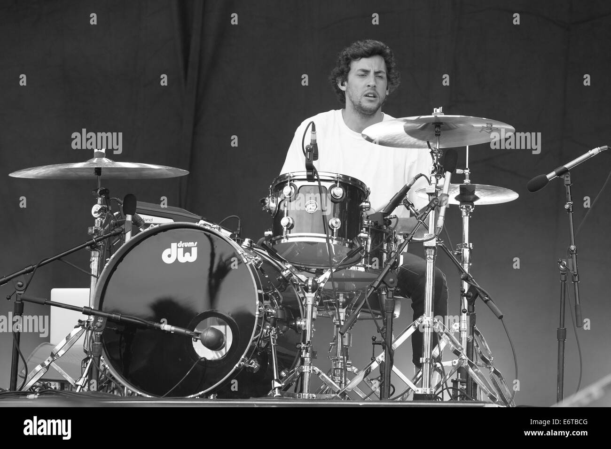
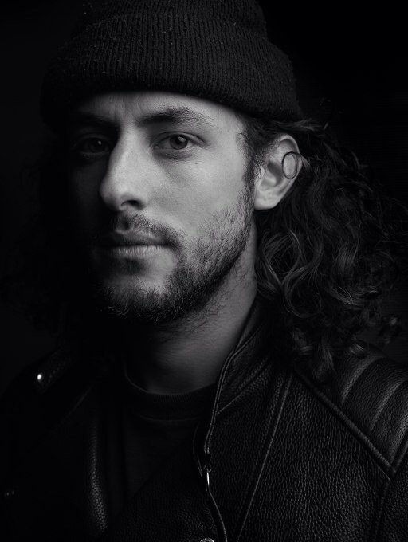
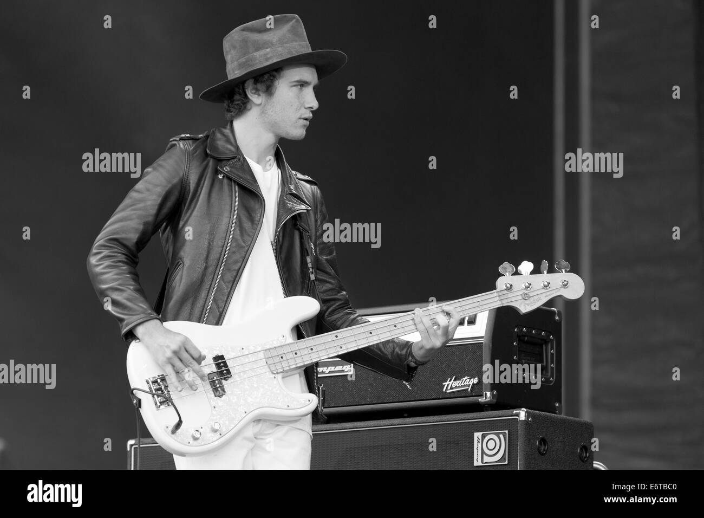
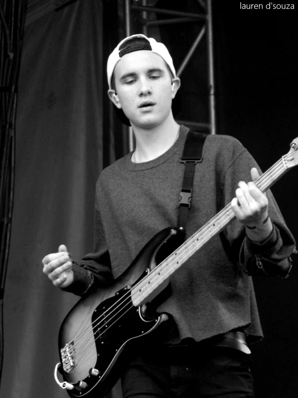

inicio
miembros
Jesse James Rutherford: (Newbury Park, California, Estados Unidos; 21 de agosto de 1991) es un cantante, rapero y actor estadounidense, conocido por ser el vocalista y líder de la banda The Neighbourhood.
Zach Abels:Nacimiento: 3 de julio de 1992 (edad 31 años), California, Estados Unidos guitarrista de la banda
Brandon Alexander Fried ,Fried o Checo nacio California 6 de Noviembre de 1990
 
JEREMY FREEDMAN: nacio en Julio 2, 1992 LUGAR DE NACIMIENTO California 31 años de edad ImpulsarGuitarrista y corista en la banda de rock The Neighbourhood
mikey Margott:Bajista Octubre 1, 1993 LUGAR DE NACIMIENTO California 29 años de edad
 